Native Memory抓取和展示说明
Native Memory是查看内存的分配和释放等情况
1.Native Memory的抓取
1.1.Native Memory抓取配置参数
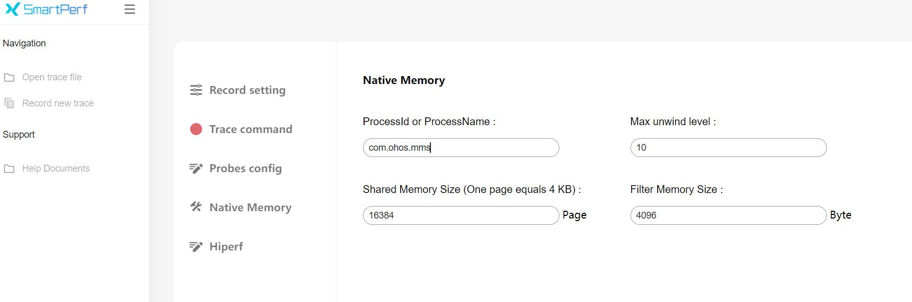配置参数说明：
- ProcessId or ProcessName:设置抓取的进程ID或者进程名,此处以输入com.ohos.mms进程名为例
- Max unwind level:抓取的栈的深度
- Shared Memory Size:native_daemon和native_hook进程之间存储数据的共享内存大小
- Filter Memory Size:只抓取大于该size的malloc数据（free不受影响）
再点击Record setting,在output file path输入文件名hiprofiler_data_nativememory.htrace,拖动滚动条设置buffer size大小是64M,抓取时长是50s
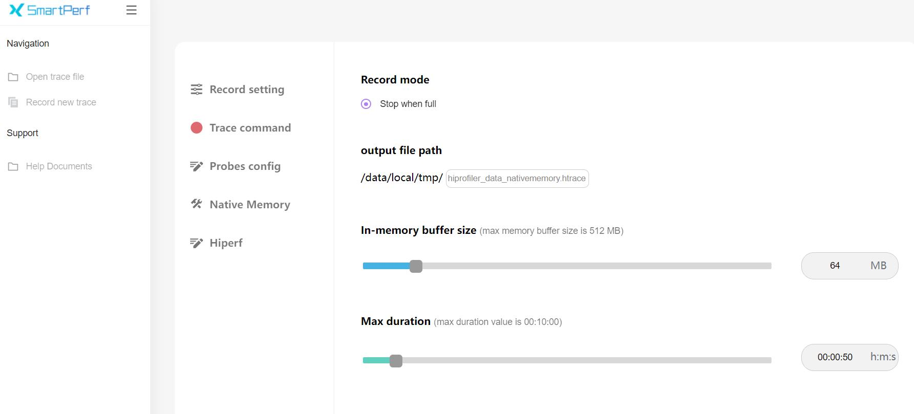
点击Trace command,就会根据上面的配置生成抓取命令,点击复制按钮，会将命令行复制
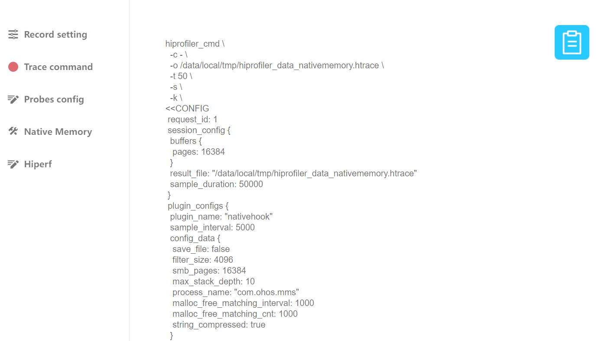
输入hdc_shell,进入设备，执行命令

执行完成后，进入指定目录查看，在/data/local/tmp下就会生成trace文件

2.Native Memory展示说明
将抓取的nativememory文件导入到smartperf工具中查看，查看内存的分配和释放等情况
2.1.Native Memory泳道图展示类型
点击齿轮状的图标可以设置内存的展示单位

-
Current Bytes：显示字节数量
-
Native Memory Density:Allocation数量
-
All Heap&AnonuymousVM：Heap和AnonuymousVM的总量
-
All Heap：malloc分配的内存
-
All Anonymous VM：mmap的匿名页
2.2.Native Memory泳道图的框选功能
可以对内存的数据进行框选，框选后在最下方的弹出层中会展示框选数据的统计表格,总共有四个tab页
Statistics的Tab页，主要显示了统计明细类型
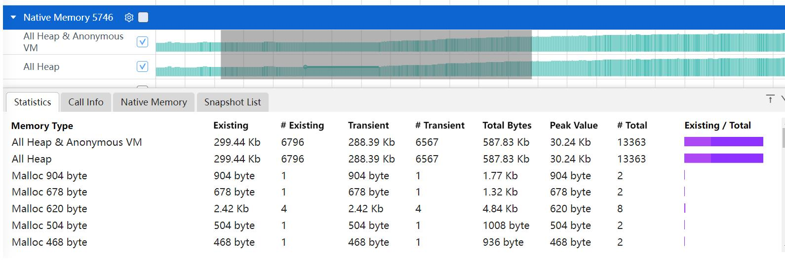
-
Memory Type：内存的类型
-
Exsiting ：框选区域内剩余的内存次数
-
#Exsiting :框选区域内剩余的内存次数
-
Transient :框选区域内释放的内存大小
-
#Transient：框选区域内释放的内存次数
-
Total Bytes：框选区间内申请的大小
-
#Total： 框选区间内申请的内存次数
-
Peak Value： 框选区间内内存大小的峰值
-
Exsiting/Total：框选区间内申请的大小比上申请和释放的大小，其中浅紫色是框选区间内申请的大小/整个时间轴（申请+释放的总大小)，深紫色是框选区间内(申请+释放)的大小/整个时间轴（申请+释放的总大小）
Call Info的Tab页，主要显示了调用树详细类型

-
Symble Name：每个内存分配的调用栈
-
Size ：分配的总大小
-
Count :调用栈出现的次数
Native Memory的Tab页，主要显示了单次分配信息列表
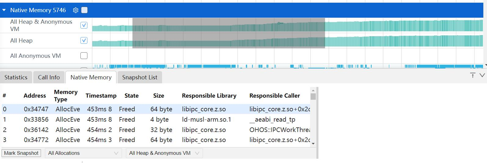
-
Address：内存块的地址
-
Memory Type ：内存分配的类型
-
Timestamp :时间戳信息
-
State :内存地址当前状态
-
Size :该时间点内存的大小
-
Responsible Library :调用该函数的库
-
Responsible Caller :调用该函数的方法
Snapshot List的Tab页，主要显示了各时刻内存的增长的差值
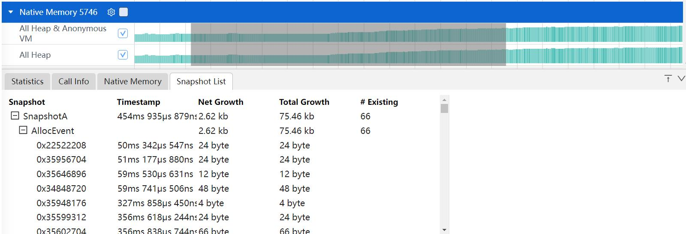
-
Snapshot：标记的打点说明
-
Timestamp :时间戳信息
-
Net Growth :自从上次Snapshot的增长量，是计算的分配和释放的
-
Total Growth :自从上次Snapshot的增长量，是计算的每一次分配的
-
#Exsiting :仍然存在的内存数
2.3.Native Memory的辅助信息功能
在Call Info和Native Memory的Tab页，点击选中某一行，右边画红线处会显示出该行调用栈的树结构信息
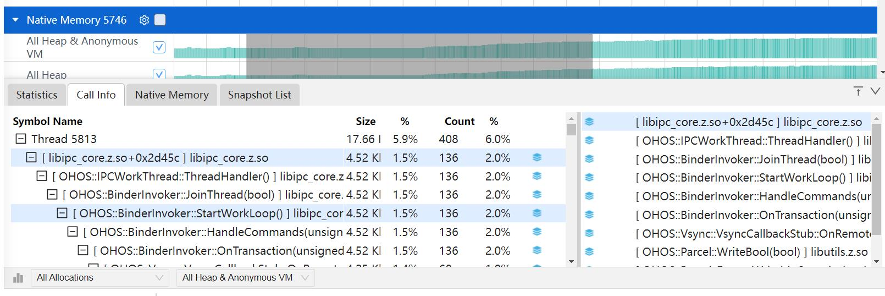
2.4.Native Memory详细显示的过滤功能
点击下方的All Allocations可以对Allocation的lifeSpan进行过滤，有三个选择：All Allocatios,Create & Exsiting,Create &
Destroyed
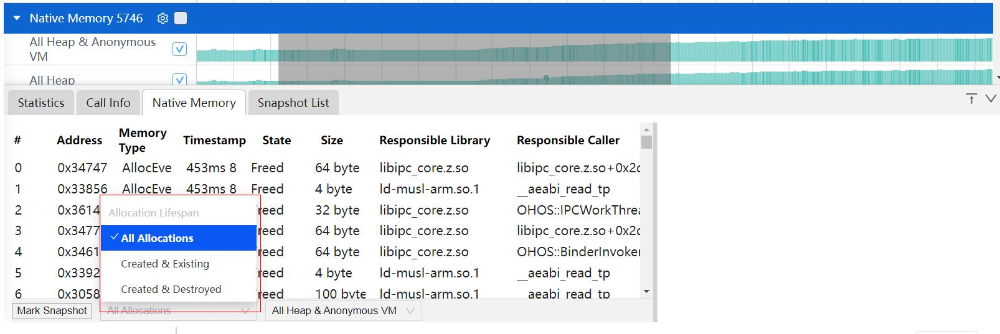
-
All Allocations：所有的内存
-
Created & Exsiting:创建且被存活的内存
-
Created & Destroyed： 创建且被销毁的内存
点击下方的All Heap&Anonymous可以对内存类型进行过滤
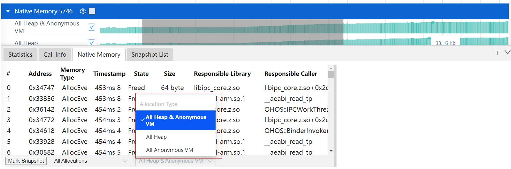
-
All Heap&AnonuymousVM：Heap和AnonuymousVM的总量
-
All Heap：malloc分配的内存
-
All Anonymous VM：mmap的匿名页
点击下方的Mark Snapshot可以在时间轴上打标签。出现小旗的标志，通过标注多个时间点。点击到Snapshot List标签页可以看到各个时间点的内存的增长值
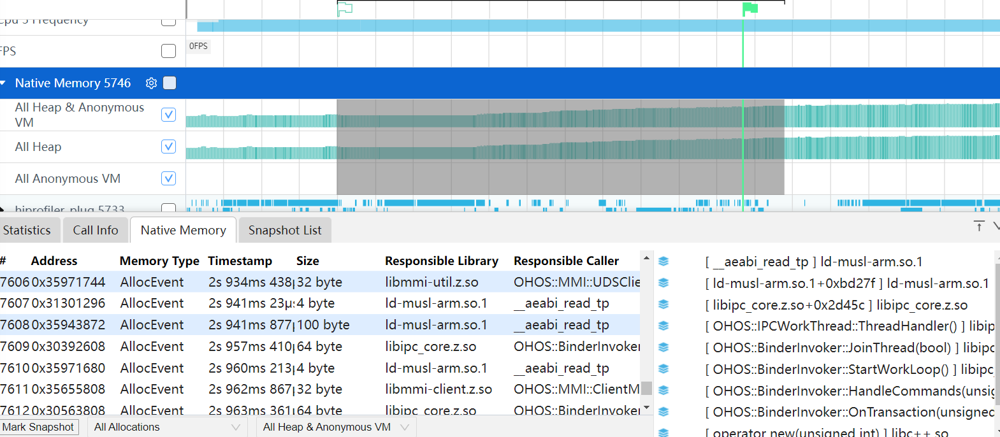
2.5.Native Memory的火焰图功能
点击callinfo左下角的柱状图的图标,会切换到火焰图页面
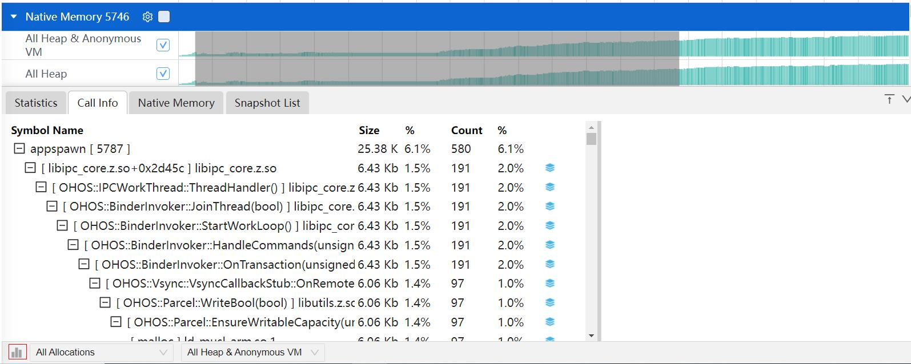
进入到火焰图页面,火焰图的展示跟Callinfo的tab页的调用栈显示一致,鼠标放到色块上，悬浮框可以显示调用栈名称和size大小
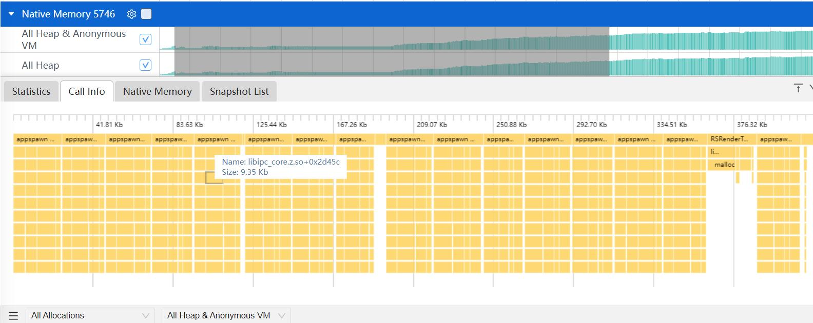
鼠标左键火焰图，会进入下一级界面，右键回到上一级
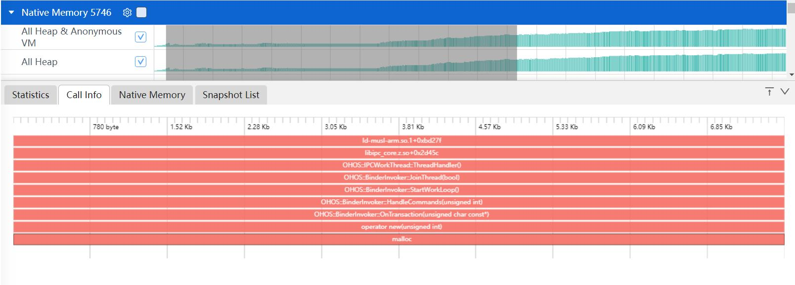